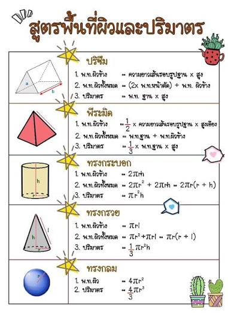

พื้นที่และปริมาตร

พื้นที่และปริมาตร หมายถึง การคำนวณขนาดของสิ่งต่าง ๆ โดยพื้นที่ใช้บอกขนาดของบริเวณหรือพื้นผิว เช่น พื้นห้อง ที่ดิน และผนัง ส่วนปริมาตรใช้บอกความจุหรือขนาดของสิ่งที่มีความกว้าง ยาว และสูง เช่น กล่อง ถังน้ำ และภาชนะต่าง ๆ ซึ่งสามารถนำไปใช้ในชีวิตประจำวัน เช่น การคำนวณจำนวนกระเบื้อง การหาปริมาณน้ำ และการวางแผนการใช้พื้นที่ให้เหมาะสม.